File: 000930.gt.txt (if the image is defective, simply delete all Arabic text and the line will be excluded)
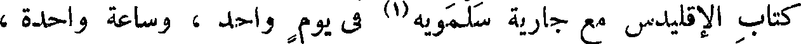
File: 000931.gt.txt (if the image is defective, simply delete all Arabic text and the line will be excluded)
فقد فرغت الجارية من الكتاب وهو بعد لم يحكم مقالة واحدة ، على أنه
File: 000932.gt.txt (if the image is defective, simply delete all Arabic text and the line will be excluded)
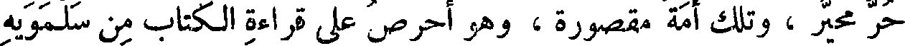
حر مخير ، وتلك أمة مقصورة ، وهو أحرص على قراءة الكتاب من سلمويه
File: 000933.gt.txt (if the image is defective, simply delete all Arabic text and the line will be excluded)
على تعليم جارية . قال ابن الجهم : قد كنت أظن أنه لم يفهم منه شكلا
File: 000934.gt.txt (if the image is defective, simply delete all Arabic text and the line will be excluded)
واحدا ، وأراك تزعم أنه قد فرغ من مقالة ! ! قال العتبى : وكيف ظننت
File: 000935.gt.txt (if the image is defective, simply delete all Arabic text and the line will be excluded)
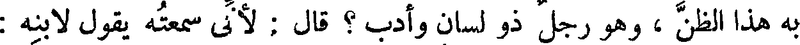
به هذا الظن ، وهو رجل ذو لسان وأدب ؟ قال : لأنى سمعته يقول لابنه :
File: 000936.gt.txt (if the image is defective, simply delete all Arabic text and the line will be excluded)
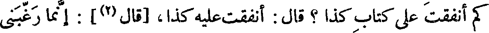
كم أنفقت على كتاب كذا ؟ قال : أنفقت عليه كذا، [قال(2)] : إنما رغبنى
File: 000937.gt.txt (if the image is defective, simply delete all Arabic text and the line will be excluded)
فى العلم أنى ظننت أنى أنفق عليه قليلا وأكتسب كثيرا ، فأما إذا صرت أنفق
File: 000938.gt.txt (if the image is defective, simply delete all Arabic text and the line will be excluded)
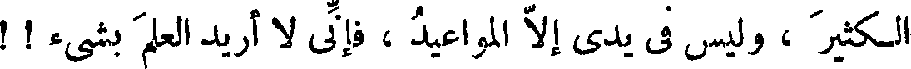
الكثير ، وليس فى يدي إلا المواعيد ، فإنى لا أريد العلم بشيء ! !
File: 000939.gt.txt (if the image is defective, simply delete all Arabic text and the line will be excluded)
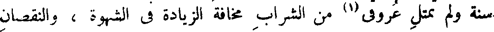
سنة ولم تمتل عروقى (1) من الشراب مخافة الزيادة فى الشهوة ، والنقصان
File: 000940.gt.txt (if the image is defective, simply delete all Arabic text and the line will be excluded)
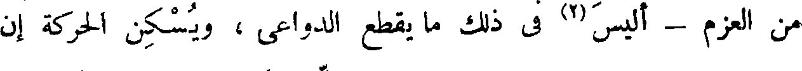
من العزم - أليس (2) فى ذلك ما يقطع الدواعى ، ويسكن الحركة إن
File: 000941.gt.txt (if the image is defective, simply delete all Arabic text and the line will be excluded)
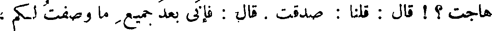
هاجت ؟ ! قال : قلنا : صدقت . قال : فإنى بعد جميع ما وصفت لكم ،
File: 000942.gt.txt (if the image is defective, simply delete all Arabic text and the line will be excluded)
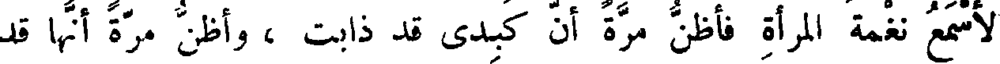
لأسمع نغمة المرأة فأظن مرة أن كبدى قد ذابت ، وأظن مرة أنها قد
File: 000943.gt.txt (if the image is defective, simply delete all Arabic text and the line will be excluded)
انصدعت ، وأظن مرة أن عقلى قد اختلس ، وربما اضطرب فؤادى عند
File: 000944.gt.txt (if the image is defective, simply delete all Arabic text and the line will be excluded)
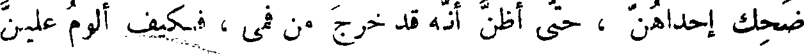
ضحك إحداهن ، حتى أظن أنه قد خرج من فمى ، فكيف ألوم علين
File: 000945.gt.txt (if the image is defective, simply delete all Arabic text and the line will be excluded)
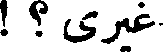
غيرى ؟ !
File: 000946.gt.txt (if the image is defective, simply delete all Arabic text and the line will be excluded)
فإن كان - حفظك الله تعالى - قد صدق على نفسه فى تلك الحال ،
File: 000947.gt.txt (if the image is defective, simply delete all Arabic text and the line will be excluded)
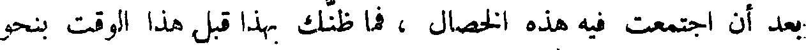
بعد أن اجتمعت فيه هذه الخصال ، فما ظنك بهذا قبل هذا الوقت بنحو
File: 000948.gt.txt (if the image is defective, simply delete all Arabic text and the line will be excluded)
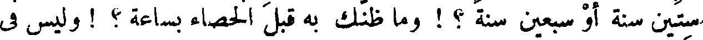
ستين سنة أو سبعين سنة ؟ ! وما ظنك به قبل الخصاء بساعة ؟ ! وليس فى
File: 000949.gt.txt (if the image is defective, simply delete all Arabic text and the line will be excluded)
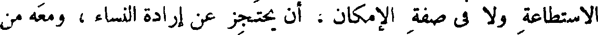
الاستطاعة ولا فى صفة الإمكان ، أن يحتجز عن إرادة النساء ، ومعه من
File: 000950.gt.txt (if the image is defective, simply delete all Arabic text and the line will be excluded)
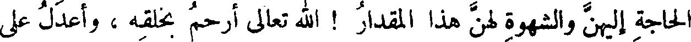
الحاجة إليهن والشهوة لهن هذا المقدار ! الله تعالى أرحم بخلقه ، وأعدل على
File: 000951.gt.txt (if the image is defective, simply delete all Arabic text and the line will be excluded)
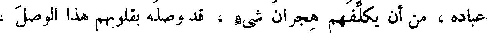
عباده ، من أن يكلفهم هجران شيء ، قد وصله بقلوبهم هذا الوصل ،
File: 000952.gt.txt (if the image is defective, simply delete all Arabic text and the line will be excluded)
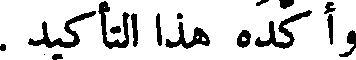
وأكده هذا التأكيد .
File: 000953.gt.txt (if the image is defective, simply delete all Arabic text and the line will be excluded)
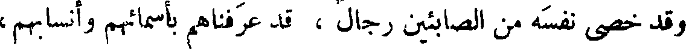
وقد خصى نفسه من الصابئين رجال ، قد عرفناهم بأسمائهم وأنسابهم ،
File: 000954.gt.txt (if the image is defective, simply delete all Arabic text and the line will be excluded)
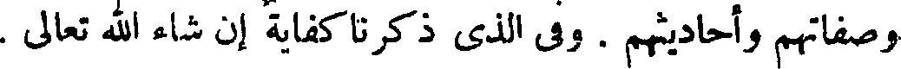
وصفاتهم وأحاديثهم . وفى الذى ذكرنا كفاية إن شاء الله تعالى .
File: 000955.gt.txt (if the image is defective, simply delete all Arabic text and the line will be excluded)
( استئذان عثمان بن مظعون في الخصاء)
File: 000956.gt.txt (if the image is defective, simply delete all Arabic text and the line will be excluded)
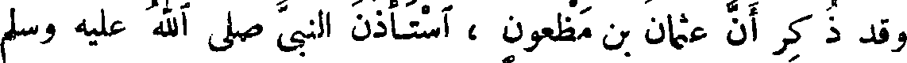
وقد ذ كر أن عثمان بن مظعون ، استأذن النبى صلى الله عليه وسلم
File: 000957.gt.txt (if the image is defective, simply delete all Arabic text and the line will be excluded)
فى السياحة فقال : « سياحة أمتى الجماعة » . واستأذنه فى الخصاء فقال :
File: 000958.gt.txt (if the image is defective, simply delete all Arabic text and the line will be excluded)
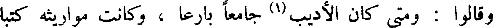
وقالوا : ومتى كان الأديب (1) جامعا بارعا ، وكانت مواريثه كتبا
File: 000959.gt.txt (if the image is defective, simply delete all Arabic text and the line will be excluded)
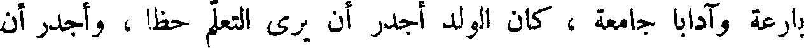
بارعة وآدابا جامعة ، كان الولد أجدر أن يرى التعلم حظا ، وأجدر أن
To Save: `Ctrl+s`, make sure to choose `Webpage, complete`!